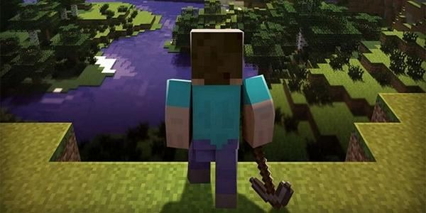

Historier
Steves store dag
Steves nye venn
Steves første gård
Steves første brød
Steves gruveeventyr – Del 1
Steves gruveeventyr – Del 2
Steves gruveeventyr – Del 3
Velkommen!
Velg en historie om Steves opplevelser i Minecraft i menyen til venstre.
